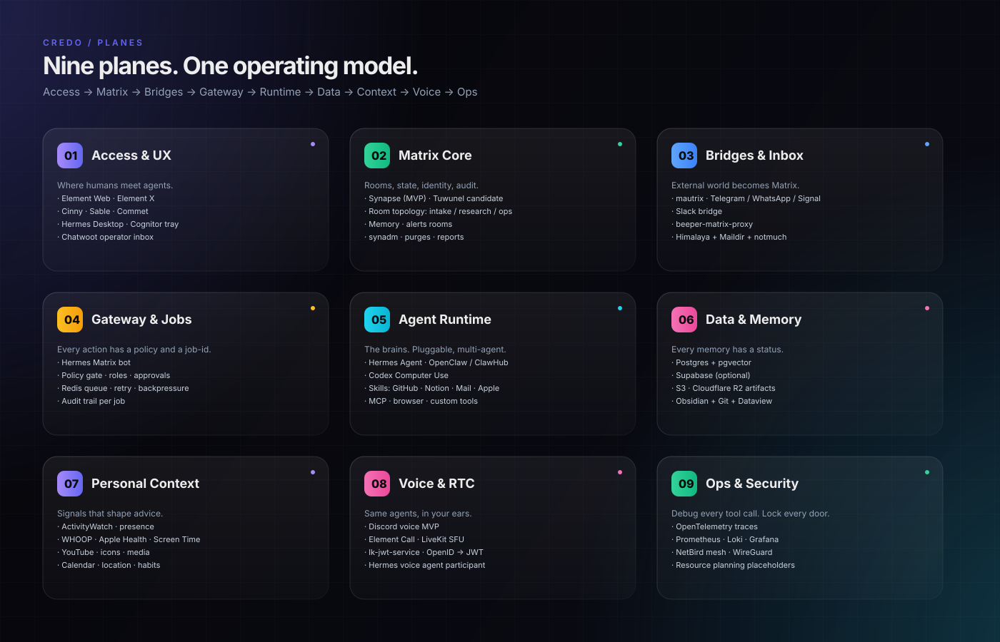
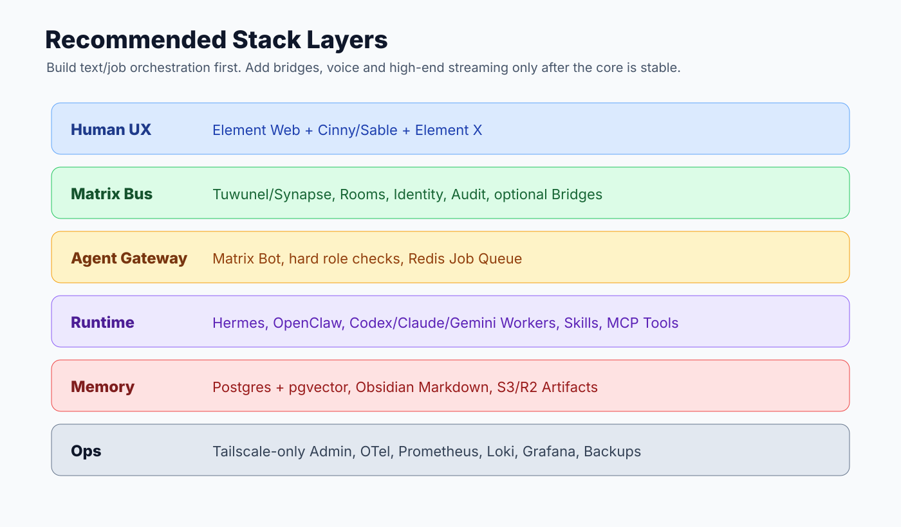
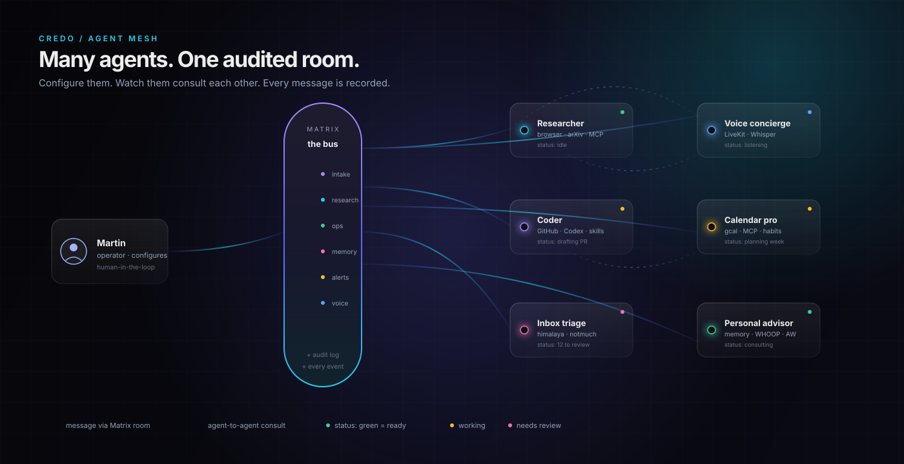
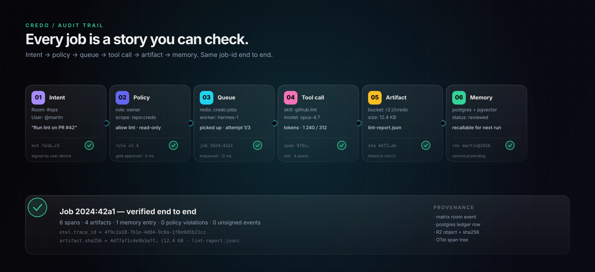

Self-hosted Matrix backbone, verifiable memory and policy-gated tool calls. Configure agents that consult each other, decide together, and leave a trail you can audit.
No mystery framework, no closed cloud. A small set of decisions that hold up under load and under audit.
Each agent is a Matrix participant. They talk to you, and to each other, in real rooms with real history. Add a new agent without writing glue.
Each job carries the same id from the chat event through Redis, the tool call, the artifact and the memory row. You can follow it, you can verify it.
Each agent has a written brief: who they advise, which tools they touch, which memories they recall. Tune them like profiles, not like code.
Credo is not a tool, it is an operating model. These six rules apply to every run, every agent, every artifact — and they are checked in code, not in slides.
Matrix gives you context, people, state, and a timeline you can read.
Roles, approvals and risks are decided in the backend before Redis and again before each risky tool call.
Redis and workers decouple long agent work from the chat event. The id ties them back together.
S3 or R2, Postgres rows and Matrix links keep results reachable — and signable.
Ephemeral, reviewed or canonical — never an unchecked long-term memory you can’t explain.
OpenTelemetry + Grafana make LLM, MCP, tool, RAG and sub-agent calls debuggable.
Access, Matrix, Bridges, Gateway, Runtime, Data, Context, Voice, Ops — each plane does one job, well.

From the human who asks, down to the disk that remembers. No magic, no surprises.

Spin up a researcher, a coder, an inbox triage, a voice concierge, a calendar pro, a personal advisor. Each lives in a Matrix room. You see who said what and why, and you can yank the plug on any single one without touching the rest.


Intent, policy, queue, tool call, artifact, memory — the same job-id carries you through. Each stop is signed: a Matrix event, a Postgres row, an R2 object with sha256, an OpenTelemetry span tree.
Start boring with Synapse. Add bridges. Add voice. Keep the audit trail untouched.
Not yet. Credo is an architectural deck and a working MVP. The README links each component to its real repo. You can install Synapse, Hermes, Postgres and Redis today and you have the stack’s foundation running.
Because Matrix is self-hostable, federated, has rooms with strong state, and an audit-friendly event model. You own the data and the keys. Bridges let you reach Slack, Discord, Telegram and WhatsApp from the same Matrix homeserver.
Every memory entry has a status — ephemeral, reviewed, or canonical — plus a provenance trail (which job, which agent, which evidence). Agents recall by status, and humans can promote or revoke entries. No hidden, unchecked long-term memory.
Credo isn’t a framework. It’s the operating model around it. Plug Hermes, OpenClaw, Codex, or your own runtime in — Credo gives you the rooms, policy gate, queue, ledger and trace. Swap one component without rewriting the others.
Clone the repo. Read the architecture. Spin up Synapse and start sending events.